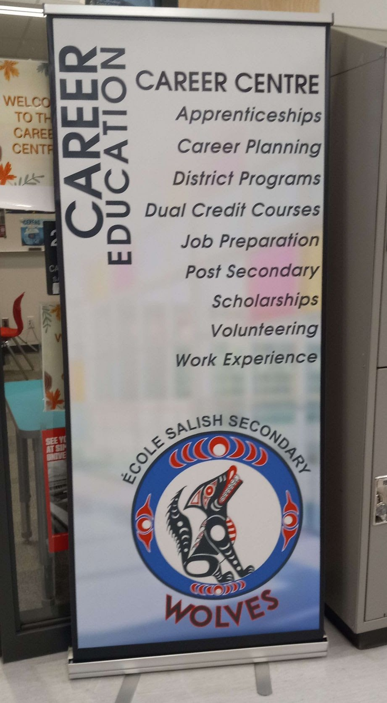

Career Centre Banner

Date October 2023.
Client Local high school Career Centre.
Tools Used Adobe InDesign, Photoshop, and the school logo.
Project Objective To design a promotional banner highlighting opportunities for students before graduation.
Why This Was a Problem The school needed a clear, professional way to communicate next-step pathways to students, but lacked any pre-existing materials.
- My Role & Contributions
- ● Created a clean, legible layout with hierarchy and white space.
- ● Featured a photo of the school under a soft white gradient for contrast.
- ● Applied branding by placing the school's logo.
- Challenges & Adaptations
- ● Ensuring text readability over imagery required experimenting with gradients and typography.
- ● Balancing visual appeal with clarity to keep the information accessible.
- Key Insights
- ● Strong hierarchy and intentional white space help viewers process information quickly.
- ● Branding is more effective when supported by purposeful layout decisions.
Reflection If I were to do this again, I'd explore multiple iterations and collect student feedback before finalizing the design, ensuring it resonates with the intended audience first for maximum impact and client benefits.